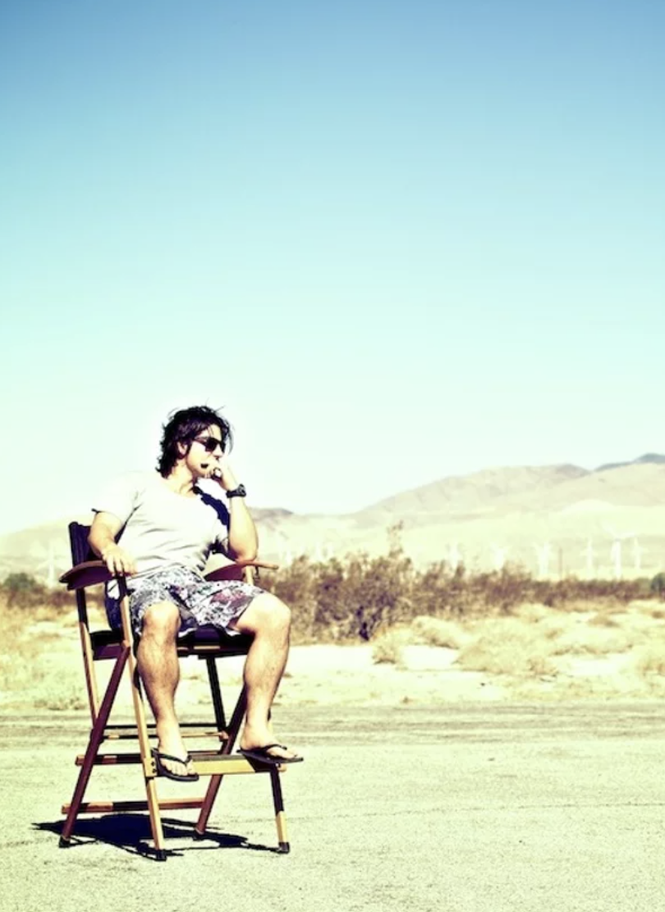
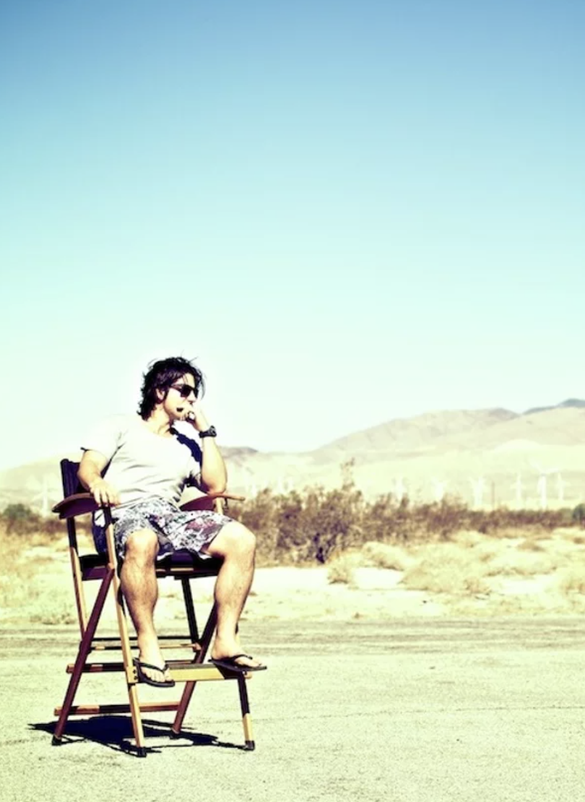

Ben arrived on earth clutching a box of crayons in one hand and a drawing book in the other. Early life drawing classes with the crazy hippies out the back of Bellingen on the North NSW Coast led to an interest in art but quickly gave him cause to leave that free and easy life and head to the big smoke for some real training. Years of slaving away surfing and doodling lead to an Art Express exhibition and a Design bachelor degree.Following this he soon realised that living on the pens is a hard way to make a crust which led to a second degree in Fashion and he focused all his energy on getting some free threads. When not designing, Ben can be found in front of a computer drawing or hunched over a beer coaster contemplating the ultimate design for world domination.